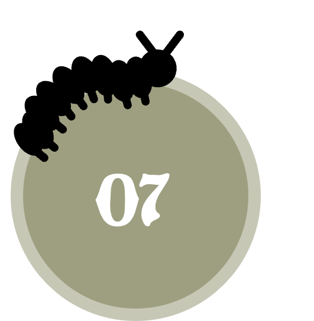
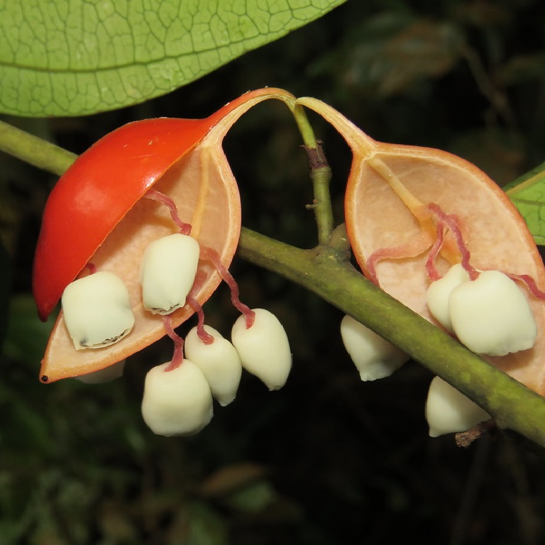
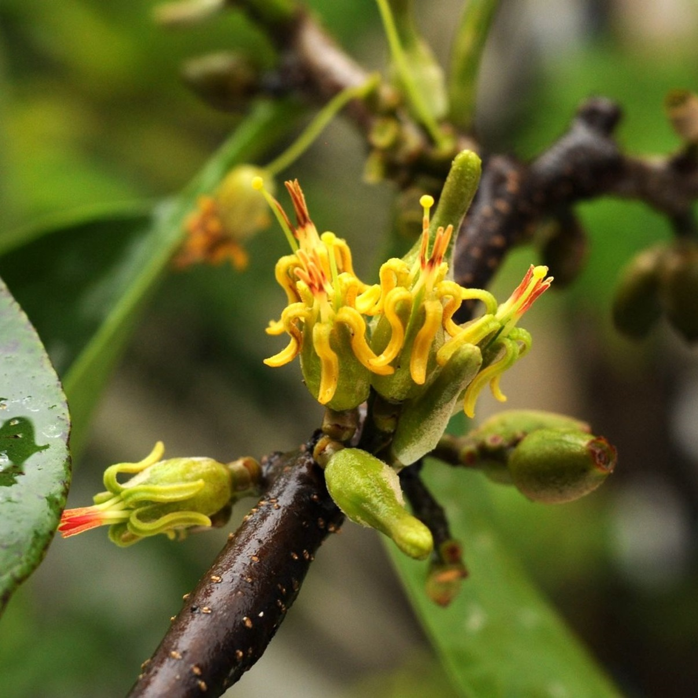
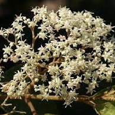

Species
There are many butterfly species around the world. Hover through the images to discover some of the most wonderful hidden in Europe and their evolutions!
Papilioninae
Chilasa clytia clytia
Common Mime
- Genus: Chilasa
- Pattern: Stripes
- Colour: White - Blue - Red
- Flower: Cinnamomum iners
- Extant in countries: Malaysia
- Wingspan: 80 - 90 mm.
- Data: Can be seen both in the nature reserves and also in urban areas.
Graphium evemon eventus
Lesser Jay
- Genus: Graphium
- Pattern: Spots
- Colour: Black - Brown - Blue
- Flower: Artabotrys wrayi
- Extant in countries: Singapore
- Wingspan: 70 - 80 mm.
- Data: Can be distinguished from the other species by its black costal bar.
Pachliopta aristolochiae asteris
Common Rose
- Genus: Pachilopta
- Pattern: Spots
- Colour: Black - White - Red
- Flower: Aristolochia acuminata
- Extant in countries: Thailand
- Wingspan: 65 - 85 mm.
- Data: Its bright red spots on the hindwings are useful against predators.
Pierinae
Leptosia nina malayana
Psyche
- Genus: Leptosia
- Pattern: Stripes
- Colour: White - Gold
- Flower: Cleome rutidosperma
- Extant in countries: Thailand
- Wingspan: 36 - 46 mm.
- Data: It is usually seen fluttering feebly, close to the ground.
Pareronia valeria lutescens
The Wanderer
- Genus: Pareronia
- Pattern: Stripes
- Colour: Brown - Yellow - Blue
- Flower: Capparis zeylanica
- Extant in countries: Singapore
- Wingspan: 26 - 30 mm.
- Data: The common form of female mimics glassy tiger to avoid predation.
Danainae
Ideopsis vulgaris macrina
Blue Glassy Tiger
- Genus: Danaus
- Pattern: Spots
- Colour: White - Black - Orange
- Flower: Asclepias currasavica
- Extant in countries: Singapore
- Wingspan: 70 - 80 mm.
- Data: It occurs in two forms, orange hindwings and white hindwings.
Danaus chrysippus chrysippus
Plain Tiger
- Genus: Ideopsis
- Pattern: Spots / Stripes
- Colour: White - Brown - Blue
- Flower: Tylophora fleuxosa
- Extant in countries: Singapore
- Wingspan: 70 - 80 mm.
- Data: The transverse black bar distinguishes the Blue Glassy Tiger from the Dark Glassy Tiger.

Morphinae
Thaumantis klugius lucipor
Dark Blue Jungle Glory
- Genus: Thaumantis
- Pattern: Spots
- Colour: White - Brown - Violet
- Flower: Anywhere
- Extant in countries: Singapore
- Wingspan: 95 - 100 mm.
- Data: Its pattern renders the butterfly invisible when feeding on the forest floor.
Discophora sondaica despoliata
Common Duffer
- Genus: Discophora
- Pattern: Plain
- Colour: White - Orange - Brown
- Flower: Bamboo Clumps
- Extant in countries: Singapore
- Wingspan: 65 - 80 mm.
- Data: Males have a few obscure bluish spots on the forewings.

Nymphalinae
Junonia orithya wallacei
Blue Pansy
- Genus: Junonia
- Pattern: Spots
- Colour: Black - Orange - Blue
- Flower: Asystasia gangetica micrantha
- Extant in countries: Thailand
- Wingspan: 40 - 55 mm.
- Data: Males' hindwing is bright blue with an orange-red subtornal ocellus.
Vanessa indica indica
Indian Red Admiral
- Genus: Vanessa
- Pattern: Spots
- Colour: White - Black - Orange
- Flower: Adenia macrophylla
- Extant in countries: Canary Islands
- Wingspan: 55 - 65 mm.
- Data: Caterpillars are equipped with numerous spikes.

Heliconiinae
Cethosia cyane
Leopard Lacewing
- Genus: Cethosia
- Pattern: Spots
- Colour: White - Black - Orange
- Flower: Passiflora foetida
- Extant in countries: Thailand
- Wingspan: 75 - 80 mm.
- Data: This dazzling butterfly exhibits strong sexual dimorphism.

Cupha erymanthis lotis
Rustic
- Genus: Cupha
- Pattern: Spots
- Colour: Black - Yellow - Orange
- Flower: Flacourtia rukam
- Extant in countries: Singapore
- Wingspan: 50 - 55 mm.
- Data: The underside of this species is paler than the upperside with similar markings as above.
Limenitidinae
Euthalia adonia pinwilli
Green Baron
- Genus: Euthalia
- Pattern: Spots
- Colour: Brown - Blue - Green
- Flower: Dendropthoe pentandra
- Extant in countries: Malaysia
- Wingspan: 50 - 60 mm.
- Data: The female of this species has a white band across both wings.


Athyma kanwa kanwa
Dot-Dash Sergeant
- Genus: Athyma
- Pattern: Spots / Stripes
- Colour: White - Black - Brown
- Flower: Uncaria canescens
- Extant in countries: Singapore
- Wingspan: 55 - 60 mm.
- Data: The upperside cell streak is entire and separated from the triangular spot beyond.
Charaxinae
Charaxes solon echo
Black Rajah
- Genus: Charaxes
- Pattern: Spots
- Colour: White - Brown - Red
- Flower: Tamarindus indica
- Extant in countries: Singapore
- Wingspan: 70 - 80 mm.
- Data: The hindwings possess a pair of equally-sized tails at veins 2 and 4.

Polyura schreiber tisamenus
Blue Nawab
- Genus: Polyura
- Pattern: Spots
- Colour: White - Gray - Green
- Flower: Acacia auriculiformis
- Extant in countries: Malaysia
- Wingspan: 60 - 80 mm.
- Data: The female of the species is usually larger with broader and longer tails.
Riodininae
Abisara saturata kausambiodes
Malayan Plum Judy
- Genus: Abisara
- Pattern: Stripes
- Colour: Red - Violet - Gold
- Flower: Embelia ribes
- Extant in countries: Singapore
- Wingspan: 42 - 45 mm.
- Data: The much paler female has a diffuse white subapical patch.
Laxita thuisto thuisto
Lesser Harlequin
- Genus: Laxita
- Pattern: Spots
- Colour: Black - Blue - Orange
- Flower: Pleroma semidecandrum
- Extant in countries: Singapore
- Wingspan: 35 - 45 mm.
- Data: Males are entirely black above, females are reddish brown.
Lycaeninae
Megisba malaya sikkima
Malayan
- Genus: Megisba
- Pattern: Spots
- Colour: White - Black
- Flower: Mallotus paniculatus
- Extant in countries: Singapore
- Wingspan: 20 - 25 mm.
- Data: Males have been observed to puddle on damp patches, animal dung and bird droppings.
Arhopala ammon ammon
Malayan Bushblue
- Genus: Arhopala
- Pattern: Spots
- Colour: White - Orange - Violet
- Flower: Trifolium pratense
- Extant in countries: Singapore
- Wingspan: 25 - 30 mm.
- Data: Encountered very locally in nature reserves, makes its appearance relatively often.
Zizeeria maha serica
Pale Grass Blue
- Genus: Zizeeria
- Pattern: Spots
- Colour: White - Black - Brown
- Flower: Oxalis barrelieri
- Extant in countries: Singapore
- Wingspan: 20 - 25 mm.
- Data: Adults have a very weak fluttering flight.
Coeliadinae
Burara etelka
Great Orange Awlet
- Genus: Burara
- Pattern: Stripes
- Colour: Orange - Violet - Blue
- Flower: Combretum sundaicum
- Extant in countries: Vietnam
- Wingspan: 50 - 60 mm.
- Data: Not common but easy to approach during the morning around concrete buildings.
Hasora taminatus malayana
White Banded Awl
- Genus: Hasora
- Pattern: Plain
- Colour: Green - Blue - Violet
- Flower: Derris scandens
- Extant in countries: India
- Wingspan: 38 - 45 mm.
- Data: Females have a small semi-transparent yellowish discal speck in the median vein
Pyrginae
Odina hieroglyphica ortina
Hieroglyphic Flat
- Genus: Odina
- Pattern: Spots
- Colour: Yellow - Black
- Flower: Erycibe tomentosa
- Extant in countries: Singapore
- Wingspan: 32 - 35 mm.
- Data: Fast-flyer, can only be observed when the adults stop to feed on flowers.

Gerosis limax dirae
Black and White Flat
- Genus: Gerosis
- Pattern: Spots
- Colour: White - Brown
- Flower: Commersonia bartramia
- Extant in countries: Thailand
- Wingspan: 35 - 38 mm.
- Data: Found in sunny forest glades, though it retreats to the shade if disturbed.
